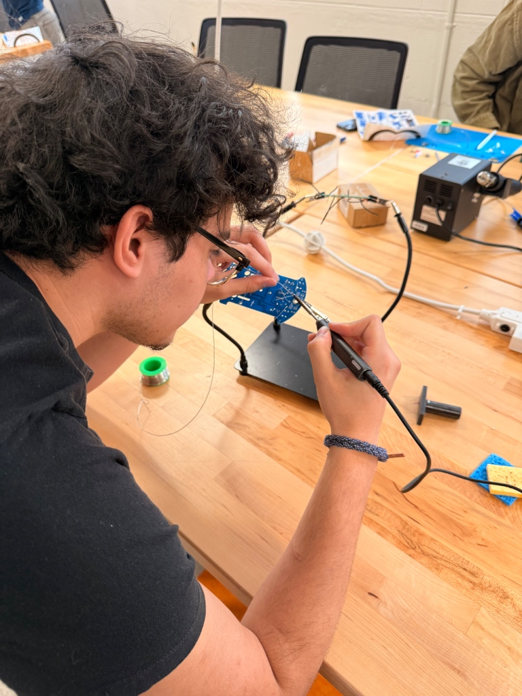
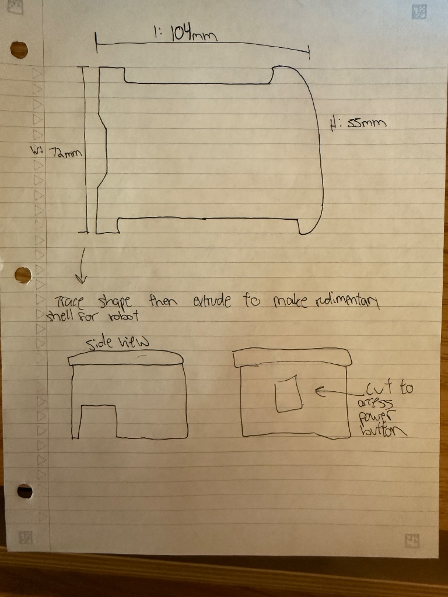
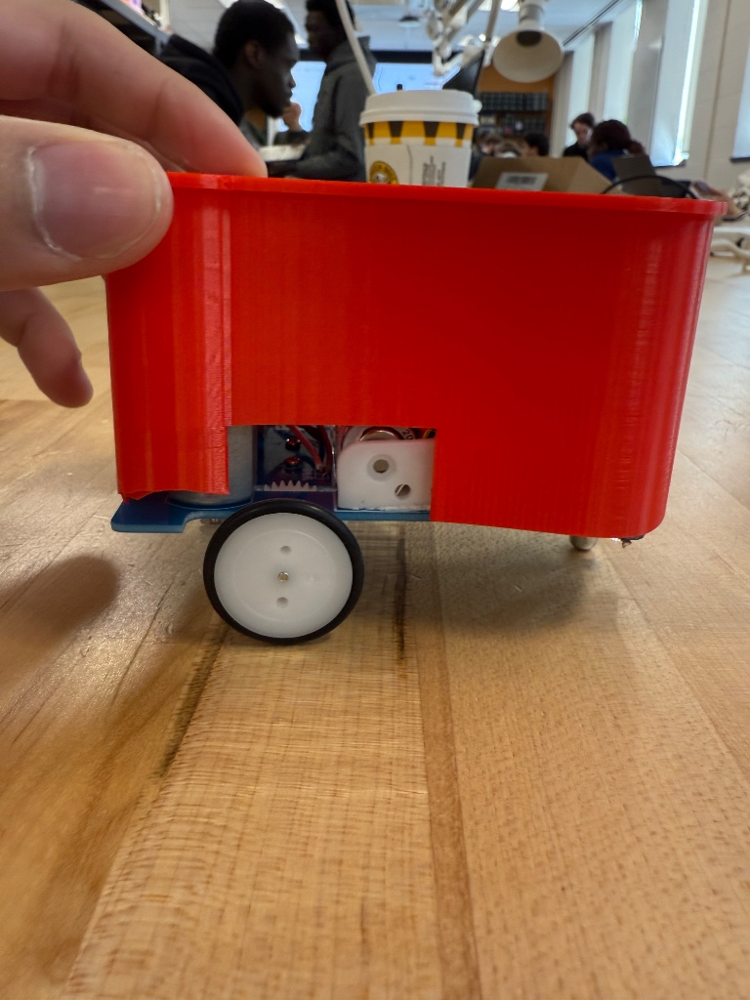
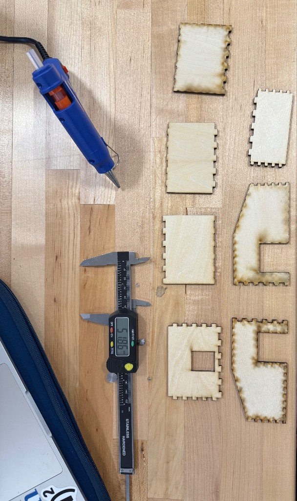
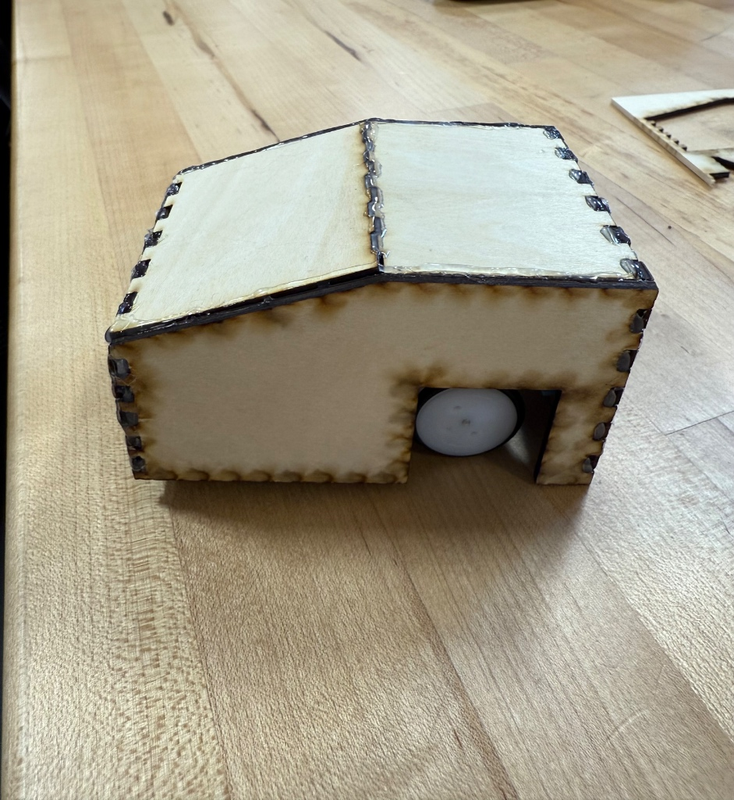

1. Pre-Build & Manual Critique
Before assembling the electronics, my partner and I reviewed the provided instruction manual. Engineering relies heavily on clear documentation, so assessing the provided instructions was a critical first step.
Manual Evaluation
Strengths: The manual provided clear parts lists and highly detailed step-by-step visuals for the mechanical assembly.
Weaknesses: We anticipated challenges with the wiring diagrams being slightly ambiguous, particularly the lack of explicit warnings regarding the soldering polarity for the motors.
Proposed Changes: If I were to rewrite this manual, I would add close-up macro photos of the wire orientations and include specific warnings about heat management during soldering to prevent damaging the PCB pads.
2. Assembly & Soldering Strategy
To ensure we both gained hands-on experience, we established a clear project management strategy for the build phase.

Figure 1: Soldering the main electronics board.
Work Division
We divided the soldering workload collaboratively; my partner focused on tinning the wires and preparing the motors, while I primarily handled soldering the through-hole components to the main board.
Soldering Reflection: I found that applying the heat directly to the pad rather than the solder yielded much cleaner, conical joints. Managing the wire routing and keeping the leads neatly trimmed was the trickiest part of the assembly process.
3. Measurements & Schematic Planning
With a working robot, we transitioned from assembly to design. I used digital calipers to take precise measurements of the hardware. This was vital because additive manufacturing requires strict tolerances.
Lab Notes: Caliper Data

Figure 2: Collaborative schematic.
4. Additive Manufacturing: 3D Printed Chassis
We set up a collaborative workspace in OnShape. To manage the CAD workflow efficiently, my partner focused on modeling the base plate and ensuring the precise alignment of the mounting holes, while I designed the geometry of the upper shell and cutouts. I also set up a workspace for myself to work on any additional design iterations that I had thought of.
The 4 Design Constraints Check
Our red 3D-printed chassis successfully accommodates all required mechanical and user-interface features:
- Wheel Movement: Designed large rectangular side cutouts ensuring zero friction against the tires.
- Sensor Visibility: Left the front undercarriage completely open so IR sensors see the floor perfectly.
- Inside Access: Designed a hollowed-out interior cavity that simply slides over the robot, which removes the need for permanent attachment.
- Power Button: Modeled a customized rectangular slot at the top and back, specifically to grant easy finger access to the switch.
Iterative Process & Fit Test

Figure 3: Testing the chassis fit over the wheelbase.
As expected in rapid prototyping, finding the right tolerances took testing. When slipping the shell over the chassis, we closely monitored the wheel clearance and the alignment of the switch cutouts.
On our initial fit test, the shell had to be slightly forced for it to slide over the electronics board. It was the back curved part where that made it too snug to fit properly. We attempted to make a minor physical adjustment by sanding the edges to prevent the plastic from catching on the circuit board. Roy and I were not satitied by forcing the shell into place, with that in mind we decided to implement an iteration where we got rid of the curved backside and made it bend at a 90-degree angle. This can be observed in the laser cut portion near the bottom.
Slicing & Trajectory Analysis

Figure 4: PrusaSlicer toolpath preview.
Settings: PLA, 15% Infill, No Supports since it was printed upside down.
Trajectory Analysis: By analyzing the toolpath preview in PrusaSlicer, I verified that the bridging over the wheel cutouts would succeed without generating stringing issues. The toolpath successfully optimized continuous loops around our delicate mounting hole cutouts to ensure maximum strength without the need for support material.
5. Subtractive Manufacturing: Laser Cut Chassis
After finalizing the 3D print, we pivoted to Subtractive Manufacturing. This required translating our 3D constraints into flat 2D planes utilizing finger joints.

Figure 5: Caliper checks post-cut.
Kerf & Calibration
Before cutting the final design, we completed a practice run for safety and calibration. Designing in OnShape meant strictly accounting for material thickness. As seen in Figure 5, we measured the wood at approximately 5.18 mm. Factoring in the kerf (the material burned away by the laser) was essential for ensuring the finger joints fit snugly together before final assembly with hot glue.

6. Final Reflection: Additive vs. Subtractive

This project highlighted the distinct challenges between Additive (3D printing) and Subtractive (Laser Cutting) manufacturing.
3D Printing offered immense freedom for creating smooth, continuous geometry (like our red upper shell), but iteration was heavily dependent on long print times and getting the plastic shrinkage tolerances right.
Laser Cutting was incredibly fast, allowing for rapid iteration. However, the design process was mentally harder, as we had to figure out how to enclose the robot using strictly flat planes and precise kerf-adjusted finger joints. Ultimately, learning to measure with calipers and design around the physical constraints of real-world electronics was a highly rewarding engineering challenge.